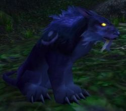

Joué par :
Kerandhil Joué par :
[ Information masquée ] Age : Jeune
Lieu de naisance : Teldrassil
Signe de naissance : Panda
Sexe : Homme
Race : Elfe
Faction : Alliance
Formation : Druide
Niveau : 60
Artisanat 1 : Dépeceur
Artisanat 2 : Artisant du cuir
Informations hrp : Druide aux ambitions changeantes, à l'humeur parfois lunatique, souvent plongé au coeur de situations dont il ne souhaite que s'échapper. A beaucoup de peine à créer des liens en général, et aime beaucoup "jouer" avec les trolls et autres orcs pour se défouler.
Description : Une enfance banale, des parents absents, un endoctrinage massif, une aventure qui changea sa vie. Loin des théories philosophiques, loin du fanatisme Elunien, il est des expériences qui ouvrent d'autres voies. On peut s'y plonger, ou y être plonger.
Des événements troublants, déchirants... ils se cumulent et nous affaiblissent, sans que l'on se rend compte, ils laissent des cicatrices. Verser au coeur des ténèbres, goûter au néant, l'approcher tellement qu'on peut en partager un peu de son essence, au prix d'y laisser un peu de la sienne...
Sera-t-il un jour possible pour Kerandhil de redevenir le jeune ambitieux qu'il était ? Affublé par tous ses masques, tous ses mensonges, tous ces rêves futiles tellement apaisants ? Pourra-t-il aller.... contre sa nature ?
Ère du Conflit [3]
Lune de la Force [1]
Décade du Panda
Décade du Gorille
Décade de l'Ours [1]
Doute
Le temps s'écoulait lentement, mais déjà la lune s'élevait au-delà des montagnes neigeuses de Winterspring. La forêt demeurait silencieuse et calme. Les doux rayons de lune flottaient dans l'air, comme voulant bercer tendrement quiconque qui aurait besoin d'être rassuré.
Une silhouette recourbée et hésitante, adossée à un arbre, ne semblait pas tenir rigueur de la douceur divine de cet astre de nuit. Sa voix répétait inlassablement des réflexions qui n'avaient ni sens, qui n'étaient le fruit d'aucune raison. De courtes phrases, des bégayements hésitants et à peine audibles émanaient péniblement de sa bouche. Son visage était crispé par la douleur, par la souffrance du doute. Tantôt son front se détendait, savourant la découverte de ses nouvelles vérités, tantôt il se plissait se soumettant à l'inéluctable lucidité des révélations de cet homme qui désormais le torturait.
Reflet-de-lune, le hameau de paix des druides, servait désormais de lieu de méditation et de réflexion à Kerandhil. Le jeune elfe s'y était laissé échoué, ne savant plus quoi penser après la trahison de ses plus proches amis. Jamais il ne les aurait pensés capables de lui infliger une pareille humiliation. Ils se sont servis de sa naïveté, juste pour nourrir leur orgueil et leur insouciante curiosité, sans même réfléchir aux conséquences. Ils ne lui ont accordé absolument aucune confiance, et maintenant, des vies sont en danger.
Il ne sait plus si il sera de taille, si il pourra mener à bien ce qu'il avait initialement comploté. Mais soudain une image lui traverse alors l'esprit, celle d'une prêtresse humaine, sa bien-aimée, son ange. Son sourire lui réchauffe le coeur, il se souvient de sa voix, si chaleureuse et compréhensive. Elle, elle lui fait confiance. Elle, elle l'aime pour ce qu'il est. Cette vision lui apaise l'esprit, pendant un court instant...
La lune diffuse sa faible lumière sur le corps de l'elfe meurtri, mais son rayonnement est faible, et l'ombre qui se profile aux pieds de l'elfe semble de plus en plus grandissante et menaçante. Kerandhil ne sait plus si cet amour avec Fréawine sera suffisant pour l'aider à chasser l'ombre qu'il cherche à maîtriser, il doute de sa force... il doute...
Lune d'Agilité
Décade du Tigre
Décade du Singe
Décade du Faucon
Lune de l'Esprit [2]
Décade de la Chouette
Décade de la Baleine
Décade du Lapin [2]
Druide fou en Orgrimmar
erandhil, encore bouleversé, le souffle haletant et le regard perdu, s'est laissé échoir sur le sol, la tête emplie de milles pensées.
Il a enfin réussi à quitter Durotar, le voilà maintenant en Ironforge, méditant sur ses actes...
"Pourquoi tant de haine... tant de violence... Qu'est-ce qui m'arrive ?
Je ne contrôle plus mes pulsions animales, j'ai besoin de me battre, j'ai besoin d'être en perpétuel mouvement, il me faut des combats, toujours plus de combats. J'ai besoin d'adversaires, de gens contre lesquels je puis combattre, il me faut des défis difficile, j'en ai besoin...
Mais pourquoi... Je ne suis pas en colère, je n'ai rien contre ces créatures, au contraire, j'en trouve même quelques unes curieuses et je voudrai tant les connaître mieux, et pourtant... Il y a quelques heures, alors qu'il faisait encore nuit, j'ai combattu une mort-vivante et une trollesse qui ne faisaient rien de mal, elles semblaient jouer sur les collines, et moi je les ai balayées, j'ai déchiré leur chair et écorcher leur peau. Une fois leurs corps au sol, je n'ai pu m'empêcher de pleurer... Je ne voulais pas les tuer... Non, je ne voulais leur faire aucun mal, mais c'est plus fort que moi..."
Le druide semble maintenant s'être calmé, sa respiration est redevenue normale. Désormais il médite, réfléchit, tourne dans sa tête les raisons et les causes qui le poussent à agir ainsi, à répandre la mort dans les rangs de la horde aux portes même de sa capitale.
"Les combats difficiles... je ne pense plus qu'à ça... C'est pour éviter de penser aux cauchemars, ces satanés cauchemars... La mort même ne m'effraie plus, elle me rend fou de rage ! Lorsque je gis sur le sol et que mon esprit se trouve en d'autres plans éthérés, le temps passe beaucoup trop long, pendant ce temps mon esprit vagabonde, mes pensées s'égarent, et j'y pense, mes cauchemars, j'y pense, je n'aime pas cela, non je déteste ça !
La victoire même n'a aucune importance, c'est le combat... c'est la concentration qu'il me demande qui importe plus que tout. Durant ce temps, l'adrénaline monte en moi, et elle coupe ainsi toutes mes pensées... adieux cauchemars, adieux visages déformés par la douleur, adieux hurlements, seul ma survie compte... à moi la paix, à moi la tranquillité, c'est un court apaisement..."
Le visage de l'elfe s'assombrit alors.
"J'ai besoin de vivre... je veux vivre... je veux exister... je veux vivre... je veux vivre..."
L'elfe a maintenant les yeux fermés, il est blottit contre un mur, caché de tous, dans l'ombre. Les mains sur son visage, il balance son corps en avant et en arrière, il sanglote, répétant inlassablement les mêmes paroles:
"Je veux vivre... je veux vivre... je veux exister... exister... je veux exister... il faut que je vive... je dois vivre...
Le mage avait raison... il ne faut pas avoir peur de la mort, non, il existe quelque chose bien pire que la mort, oui c'est ça que je vois dans mes rêves, c'est cela torture mon âme et démembre mon esprit... c'est ma peur... c'est ma crainte du... néant..."
Lumière
Une nuit mouvementée, une nuit pleine de rencontres...
L'elfe a subi une illumination, spontanée, inexplicable troublante. Ces cauchemars, ils ne faisaient que commencer, chaque fois il se réveillait avant qu'ils ne soient terminés, jamais il n'avait réussi à lutter jusqu'à la fin, à se battre, à affronter ces visages déformés par la douleur et la souffrance.
Mais cette nuit là, il réussit. Il aperçut alors une lumière, une faible lumière au milieu des ombres, des hurlements stridents et effrayants. Cette lumière, elle était ridicule, minuscule, mais si on prenait la peine de se concentrer sur elle, on pouvait oublier tout le malheur qui la submergeait alors tout autour.
Le druide le comprit, et il le montra à son ami le mage, il lui montra ses cauchemars, il réussit à lui insuffler l'essence même de ces rêves. Le mage sembla touché par ce témoignage, ces certitudes en furent bien ébranlées.
Mais toujours et encore, le mage fuyait. Cependant Kerandhil n'abandonnerait pas, du moins, c'est ce qu'il souhaitait. Mais l'elfe change, constamment, perpétuellement, nul ne sait de quoi demain sera fait. Tout est soumis au chaos et à l'anarchie, rien n'est prévisible... rien...
Aucune bonne volonté, quelle qu'elle soit ne pourrait lui permettre de sauvegarder ses promesses, non cela était impossible... Kerandhil l'avait compris... il devait mentir...
Troisième Ère [2]
Lune de la Force [2]
Décade du Panda [2]
Assummer sa vraie nature
Kerandhil l'avait toujours su, Môr'haun cette bête, ce démon...
Il était à la base de tous nos problèmes, il le savait depuis le début. Mais plus qu'un démon, un effroyable manipulateur, un manipulateur talentueux qui s'était attaqué à Kerandhil, lui aussi blessé, enclin au même désespoir que Loerys...
Cette nuit, Kerandhil rencontra Loerys, à Tanaris. Il savait qu'il le trouverait là-bas... Son désert, ses vastes étendues désertiques...
Il voulait lui parler, il voulait essayer de l'aider. Il ne voulait pas l'abandonner. Mais ce qu'il vit fut trop fort, trop effrayant. Le vide, le néant... Loerys n'existait plus.
Kerandhil dut fuir, ne pouvant faire face à l'évidence. Il n'en avait rien à faire de la disparition de Loerys... Non, cela lui importait peu. Si loerys devait s'évaporer, il l'oublierait, il le remplacerait s'il le fallait même. Ce n'était pas de la tristesse qui habitait son coeur, c'était de la rage, du désespoir... Il ne pouvait se faire à cette pensée, pourtant tellement véritable, révélatrice de sa vraie personne... Le temps aurait eu raison de ses sentiments, instables, continuellement en changement. S'il avait essayé d'aider Loerys, c'était seulement pour lui. C'était pour se prouver qu'il pouvait donner de l'importance à quelque chose, se donner un objectif, un but quelconque... mais ce n'était qu'un simple mensonge... une pitoyable tentative de fuite... il ne voulait pas écouter ses songes...
Pourquoi ne pouvait-il ressentir de l'affection ? Pourquoi ne réussissait-il pas à se lier aux personnes qu'il croyait apprécier ? Toutes ces émotions, des mensonges, des malentendus... Il avait menti à Loerys, il lui avait menti... Il lui avait dit qu'il ne l'abandonnerait pas, qu'il comptait pour lui, mais c'était faux. Rien ne peut compter, plus rien n'a d'importance pour Kerandhil... plus rien...
En lui mentant, Kerandhil savait qu'il avait participé à la décrépitude du mage... Il se sentait coupable. Il l'avait trahi.
Cela devait cesser. Les sons, les musiques, les complaintes lancinantes, elles s'insinuaient dans son esprit. La lumière s'en est allée, ce n'était qu'un mirage... Mais maintenant, les visions des cauchemars, elles ne l'aggressent plus. Elles l'appellent, elles veulent le réconforter de leur étreinte glaciale.
Il faut arrêter de mentir. Tout lutte est vaine. "Je suis chaos, je suis instable, je suis dangereux, je dois suivre les conseils que je donnais à Loerys... Cesser de fuir !"
L'anarchie, le chaos, le néant, ses essences pures, ces essences véritables, elles le caressent, elles le cajolent, le consolent.
"Je dois accepter ma vraie nature, je ne dois plus me battre contre elle, cette lutte est vaine, inutile... Je dois..."
La musique, mélodieuse, insistante, inéluctable, elle emplit son esprit, elle lui dicte sa conduite, elle résonne d'un glacial écho dans toute son âme.
L'elfe court, il ne prend même plus la peine de se transformer, il jette ses vêtements, il veut se détacher de tout. Il marche, lentement, ses yeux fixent l'horizon. Ses pieds nus foulent le sol des Tarides, bientôt, il approche... il le sent...
Les chants sont de plus en plus forts, les visages déformés par la douleur se mettent à chanter, leurs complaintes sont dures, froides et tristes, malgré leur apparence répugnante et effrayante, ils ne lui veulent aucun mal. "Il me faut accepter leur nature, je ne dois plus me battre contre elles, je ne dois plus les nier."
Il fait froid, mais Kerandhil n'a plus de sensation, des hyènes l'attaquent, lui arrachant des morceaux de chair, mais l'elfe reste stoïque, il se contente d'avancer, sans changer son allure, sans réagir, fixant toujours un point à l'horizon. Les mélodies sont de plus en plus présentes, elles le réconfortent, leur froideur lui semble presque accueillante.
"Oui... voilà... ce pour quoi je suis né... voilà ma vraie nature... Le néant..."
Les cavernes des lamentations se dessinent devant lui. Il s'y introduit alors, provocant l'étonnement de quelques autochtones qui semblaient explorer les alentours. Il rentre enfin dans les cavernes...
Là... un autel de pierre... il s'y couche. Quelques pensées lui traversent alors l'esprit, des souvenirs...
"Kylhi ? Toujours à vouloir paraître... tout va mal... mais tout doit aller bien... Faire semblant... encore... Il ne m'a jamais vraiment aimé... Chez Bruuk... jamais je ne l'aurai pensé capable d'une pareille machination pour me sous-tirer des informations..."
"Cette elfe druide... cet amour pourtant tellement merveilleux... ? Qu'une simple rencontre, un malentendu... Une idylle stupide qui n'aurait jamais du être... Mais je dois la remercier... sans elle je n'aurai jamais compris la vraie nature des relations entre les gens : futile et fausse..."
"Fréawine ? Je l'ai blessée, elle était très gentille, mais je ne l'aimais pas... je ne pouvais plus... Encore une fois... j'étais victime de mes sensations, de mes sentiments trompeurs, le chaos... l'anarchie, je ne pouvais le gérer..." "Felyndiria ? Une nouvelle rencontre, je ne devais plus la voir, je l'aurai blessée, mes sentiments inconstants, irréguliers auraient fait une nouvelle victime, l'amour... faux, menteur, impossible !"
"Ayame... Loerys... Môr'haun... Asline... Dhaeronsul... Miline... Plus d'importance... c'est du passé... je veux accepter ma vraie nature, me détacher de ce monde futile inondé de masques, je veux rejoindre les essences, les vraies, les véritables..."
Mais une dernière larme, une ultime larme gorgée de toute sa tristesse, de tout son désespoir perle alors le long d'une de ses joues.
Ses yeux se ferment, tout s'agite autour de lui. Il rêve, le voilà à nouveau, dans ce rêve d'émeraude, dans ses cauchemars. Mais cette fois quelque chose change, il ne lutte plus contre ses cauchemars, il veut ne faire qu'un avec eux, il veut rejoindre ces complaintes lancinantes, il veut les embrasser de tout son corps, de toute son âme.
La larme, qui brillait alors d'une tristesse infinie tombe à terre, et se met à scintiller.
Tout se trouble, Kerandhil semble devenir transparent, il semble s'évaporer, il rejoint son rêve, il va le vivre pleinement... La musique aux sons discordieux se fait alors de plus en plus mélodieuse, elle le berce, elle le cajole. Des essences dansent et tournent autour de lui, elles l'enlèvent. Le chaos et l'anarchie s'insuffle en lui, son âme en est continuellement imprégnée, il a disparu...
La larme se cristallise alors, elle se transforme en un éclat brillant. Un éclat rempli de toute sa tristesse, de tous ses souvenirs, de toutes ses déceptions, de tout ce qui avait fait de lui quelqu'un de "rempli". De tout ce qui faisait de ce druide... quelqu'un. Maintenant... il a rejoint le vide... il est le vide...
Une créature dégoûtante sort alors du bassin, c'est un Murlock, massif, très grand. Il s'empare de ce trésor, et décide de le garder, attiré par la lumière qui en émane. Il retourne ainsi dans les eaux, en possession d'un bien très précieux...
Et Kerandhil lui... n'est plus...
Résurection
Une chute vertigineuse, inéluctable, interminable... Des ombres qui lui écorchent son âme, des murmures qui lui dévore son coeur... Des souffles glacials qui lui torturent l'esprit, qui lui coupent son souffle.
Les visages déformés, les cris, les hurlements stridents, la mélodie lancinante, tous plongent sur lui. Il est leur proie, tous se ruent pour le dévorer. Impossible de lutter contre pareilles atrocités, le voilà prisonnier. Il se vide, on lui arrache ses sentiments, ses émotions, on le dépèce de son existence.
Ces essences du néant s'emparent de tout, on extirpe du fin fond de ses entrailles tout ce qui a jamais fait de lui ce qu'il était.
Mais ce "rêve" ne peut durer éternellement, le réveil sera brutal, l'atterrissage inattendu. Lui qui pensait enfin disparaître à jamais, il doit malheureusement se rendre compte de l'évidence... on ne peut s'évaporer aussi facilement. Quelques restes d'humanités, quelques souvenirs. On ne lui pas encore tout prix. Mais tout cela n'a plus d'importance, plus rien n'a d'importance. Il n'est plus que chaos, il n'est plus qu'anarchie. Tout ce qu'il avait toujours compris, tout ce que sa lucidité étouffante lui avait révélée, il le vit à présent. Lui qui voulait simplement disparaître, mourir, il doit maintenant faire face à la cruelle ironie du sort.
Lui... ? Mais est-ce encore lui ? Non ce ne l'est plus, du moins pas tout à fait. Il n'est plus ici, son essence, ses émotions ses sentiments, ses peurs, ses angoisses, ses rêves, ses ambitions, eux, sont restés autre part. Les ombres, le souffle glacial, les mains crochues et avides, ils s'en sont emparées, elles sont restées autre part, dans ce maudit... "rêve". Désormais plus rien n'a de sens.
Plus le temps passe, plus l'essence même de Kerandhil disparaît. Son âme est aspirée, dans cette pierre, dans ce cristal... La condensation de ses dernières émotions, de ses dernières sensations, cette pierre si précieuse qu'on lui a enlevé, que lui, le dévoreur lui a dérobé...
Mais le gardien de ce précieux trésor n'est pas une créature redoutable. Seuls les faibles, seuls les désespérés en quête de lumière se laissent happés par son improbable cruauté. Pour les autres, ceux qui vivent et croient savoir pourquoi, ils n'en ont rien à craindre. Mais comment l'approcher, lui ,vautré dans les ombres, gardien de ce royaume de cauchemars, aspirant petit à petit l'essence du druide affaibli, protégé par la distance qui séparent ces deux mondes ?
Le cercle vicieux entame son oeuvre. Le druide, blesse son entourage, ses anciens amis. Les masques tombent, les vérités qui n'étaient pas bonnes à dire sont dévoilées. Les choses se présentent sous d'autres angles, tout semble confus, mélangés, c'est le chaos et l'anarchie, il n'y a rien à en tirer... c'est le néant...
Kerandhil, du moins ce qu'il en reste, a compris qu'il faisait du mal... Il veut disparaître, toujours, encore plus... Il oublie... il se perd... il rejoint le néant...
"Mais... et si... Felyndiria... Elle... enfin... peut-être... ? Non.... du mal.... je.... ne.... veux.... pas...... trop.... de.... souffrance......qui.... sait.... ?"
Le tourbillon des abymes du néant se fait oppressant, il veut l'engouffrer, il l'aspire, mais il reste un dernier obstacle... un dernier espoir... ?